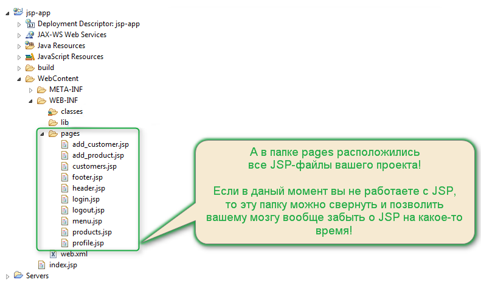
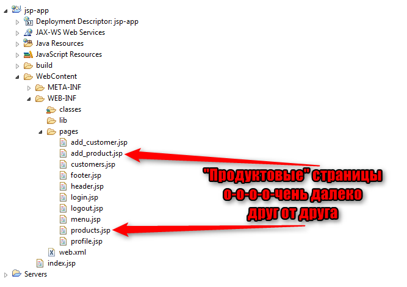
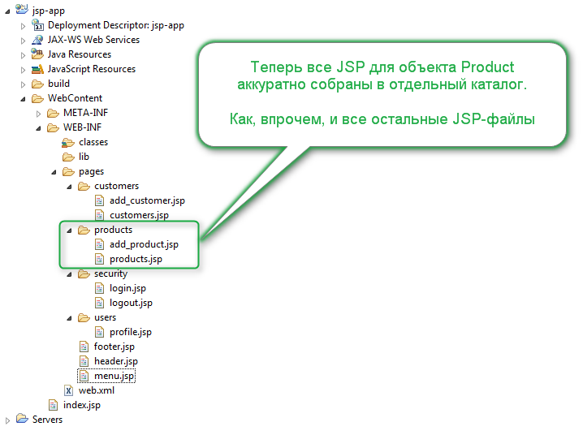

Текущая ошибка с вашей стороны уже не будет чересчур криминальной.
По крайней мере, если вы положили свои JSP-файлы в
серверную часть приложения,
и завели для них
отдельный подкаталог,
то я уже не стану здесь визжать также, как в прошлый раз
Связано это с тем, что о текущей ошибке действительно можно не подумать, особенно в маленькой учебной работе. Однако, когда вы придете на реальный проект или, когда вы приступите к выполнению своего курсового проекта, то, скорее всего, вы столкнётесь с этой ситуацией.
Чтобы понять суть ошибки, давайте еще раз посмотрим на рисунок, который мы уже использовали ранее:

Согласитесь, в папке pages все еще расположено очень много файлов, а это значит,
что каждый раз, когда вы собираетесь работать с одной JSP, ваши глаза все равно видят их все!
А это, в свою очередь, означает, что ваш мозг напрягается по поводу их существования
.
Наша же главная задача во время работы — сделать так, чтобы мозг был сосредоточен на
наименьшем участке проекта, что позволит исключить для него
посторонние шумы
, и, как результат — закончить работу быстрее.
Тот же самый рисунок показывает нам, что JSP-страницы в папке pages — неоднородны.
Подумав немного, мы можем поделить все страницы на следующие группы:
add_customer.jsp
customers.jsp
add_product.jsp
products.jsp
profile.jsp
login.jsp
logout.jsp
Следовательно, раз мы можем сгруппировать все наши страницы словами или на бумаге,
то почему бы нам не сделать это в своем проекте?
Но перед тем, как мы это сделаем, позвольте еще пару аргументов в сторону того, почему сваливать все страницы в одну папку плохо.
Посмотрите, как у нас удачно расположились страницы, отвечающие за работу с продуктами:
А теперь представьте, что в процессе работы над приложением у вас для продуктов еще появятся страницы, которые отображают:
и так далее.
Получается, что если в какой-то день team lead подойдет к вам с простым вопросом:
Дружище, а можешь быстренько сказать, сколько у нас страниц уже реализовано для продуктов?
Заказчик сильно интересуется.
То вы попросите у него полчаса, для того чтобы все страницы найти, и аккуратненько на отдельный листик выписать...
Естественно, такие сроки не очень подойдут — за пол часа, блин, можно еще одну страницу склепать
Так вот чтобы не выписывать аккуратненько в чистый листик все JSP-файлы для продуктов,
стоит сразу же, как только вы начинаете работать с новым бизнес-объектом типа Product
Создать для его JSP-файлов отдельный каталог в папке pages
И тогда на вопрос team leader-а — покажи мне страницы с продуктами
,
вы не будете метаться судорожно по всем файлам, а сможете вообще разнаглеться, и бросить в его сторону что-нибудь дерзкое? типа:
Братуха, тебе что, тимлидское кресло совсем на мозг сильно стало давить? Открой папку с продуктами, да сам посмотри!
Шастают тут всякие в галстуках, чаю не попить!..
И теперь в этой ошибке мне больше нечего вам сказать. Давайте приведем рисунок того, как будут выглядеть JSP-фалы нашего примера, после правильного структурирования:
И закончим выводом: если ваш проект работает с множеством бизнес-объетов, к которым применяются разные правила бизнес-логики, и которые требуют разных страниц для пользовательского интерфейса, то:
Сложите все JSP-файлы, относящиеся к каждому бизнес-объекту в отдельный подкаталог!
Это позволит существенно упростить их поиск, а значит — и поддержку, и добавление новых файлов.
Получается, что в корневом каталоге pages у нас остаются только общие страницы, типа:
header.jspmenu.jspfooter.jspНу, на данный момент, получается так... Но когда эта падла говорила вам правду? Или хотя бы — всю правду сразу?